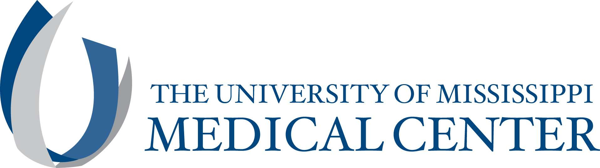
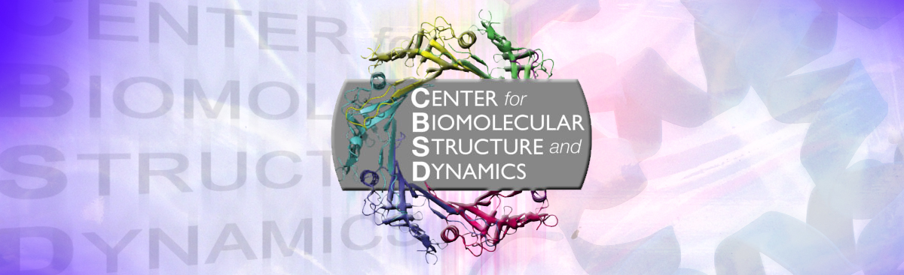

Organizations and Facilities
Alberta RNA Reserach and Training Institute
The Alberta RNA Research and Training Institute (ARRTI), established in December 2011, is the first RNA focused research centre in the province and uses mainly biophysical and engineering approaches in the study of structure and function of RNA based cellular systems.
Visit the ARRTI website here.
Director: Tony Russel, PhD
Associate Director: Stacey Wetmore, PhD
UCL Analytical Ultracentrifuge Facility

UCL's Analytical Ultracentrifuge Facility has a proven track record with setting up the AUC enables them to claim that they are the most successful AUC laboratory in the London area. They are always interested in new AUC collaborations with colleagues.
Visit the website here.
Director: Jayesh Gor
Email: j.gor@ucl.ac.uk
UMiss Analytical Ultracentrifuge Facility

The Analytical Ultracentrifuge Facility is a core facility that provides assistance and equipment access to ultracentrifugation to perform hydrodynamic characterization of macromolecular size, shape and reversible association. The Core equipment consists of Beckman XLA Analytical Ultracentrifuge equipped with absorption optics, AVIV FDS system for fluorescence detection, Anton Paar DMA 5000 for density measurements, and Anton Paar AMVm micro viscometer.
Visit the AUC Core website here.
Director: John Correia
Email: jcorreia@umc.edu
UT Health Center for Analytical Ultracentrifuation of Macromolecular Assemblies
The Center for Analytical Ultracentrifugation of Macromolecular Assemblies (CAUMA) provides analytical ultracentrifugation (AUC) service for local and national investigators. Research projects conducted at CAUMA include the study of biological macromolecules, nanoparticles, and material science applications. For each study, we assist the investigator by developing a custom experimental design, performing the data acquisition, and by analyzing the resulting data using the popular UltraScan software, which provides unsurpassed resolution and accuracy. We also offer training on our AUC instruments, and teach a workshop on AUC data analysis with UltraScan.
Visit the website here.
AUC Solutions, LLC

AUC Solutions, LLC was founded in 2015 to support AUC users worldwide. Our company provides expertise in experimental design, data analysis, analytical software, high-performance computing solutions for AUC analysis, and high-throughput analysis.
Vist the AUC Solutions website here.
President and CEO: Borries Demeler, PhD
Software and Systems: Gary Gorbet
Product Development: Aaron Householder
Marketing: Mike Troy
Biomolecular Interaction Technologies Center
The Biomolecular Interaction Technologies Center is an NSF Industry/University Cooperative Reserach center that is designed to help the pharmaceutical and instrumentation industries to provide advanced instruments and methods for characterizing molecular interactions.
Visti the BITC website here.
Director: Christopher J. Roberts
Email: cjr@udel.edu
UConn Biophysics Facility
The Biophysics Facility consists of microcalorimetry (isothermal titration calorimetry and differential scanning calorimetry) and microscale thermophoresis. These approaches support research specializing in the study of characteristics of molecules and the interaction between molecules. These biophysical characteristics are of great interest to many biological, pharmaceutical, and chemical research questions.
Visit the Biophysics Facility website here.
Facility Scientist: Emery Ng
Email: emery.ng@uconn.edu
UMt Center for Biomolecular Structure and Dynamics

The Center for Biomolecular Structure and Dynamics (CBSD) apply the methods and concepts of biophysics, structural biology and mathematics to understand the mechanistic basis of biological processes in health and disease.
BioSpectroscopy Core Research Laboratorys
The purpose of the BioSpectroscopy Core Research Laboratory (BCRL) is to offer a centralized, shared resource for time-resolved fluorescence spectroscopy, single-molecule spectroscopy and fluorescence imaging that provides access to instruments, technologies, and services, as well as expert consultation.
Visit the CBSD website here.
Visit the BCRL website here.
Director: Bruce Bowler
Associate Director: Steve Sprang
Canadian Center for Hydrodynamics
The Canadian Center for Hydrodynamics is located at the University of Lethbridge, Alberta, Canada. The CCH provides solution characterization services including experimental design, protocol development, data analysis and report preparation for manuscripts, grant applications and FDA applications for analytical ultracentrifugation experiments.
Visit the CCH website here.
Principle Investigator: Borries Demeler
Research Director: Amy Henrickson
UIdaho Mass Spectrometry Core Facility
The niversity of Idaho Mass Spectrometry Core Facility is equipped with mass spectrometers with complimentary capabilities for the analysis of various volatile and non-volatile organic compounds and biochemicals.
Visit the MSCL website here.
Northwest Biophysics Consortium
The Northwest Biophysics Consortium (NBC) represents a group of investigators located in the northwest region of the US and Canda that has special interest in biophysical research.
Visit the NBC website here.
Facilities that are a part of the NBC include: the Canadian Center for Hydrodynamics, the BioSpectroscopy Core Research Laboratory, the Center for Biomolecular Structure and Dynamics, and the Mass Spectrosmetry Core Laboratory.
Exreme Science and Engineering Discovery Environment

The Extreme Science and Engineering Discovery Environment (XSEDE) is a single virtual system that scientists can use to interactively share computing resources, data and expertise. People around the world use these resources and services- things like supercomputers, collections of data and new tools- to improve our planet.
Visit the XSEDE website here.
Principle Investigator: John Towns
MIT Biophysical Instrumentation Facility
The MIT Biophysical Instrumentation Facility is used by MIT researchers in Chemistry, Biology, Biological Engineering and Chemical Engineering and is available to all members of the MIT community and beyond. The BIF was established by Prof. Barbara Imperiali through funding from the NIH, the NSF and MIT.
BIF houses instrumentation for the aiding of elucidation of maromolecular structures such as analytical ultracentrifuges, dichroism spectrometers, isothermal titratio calorimeters, light scattering instruments, etc.
Visit the BIF website here.
Email: bif@mit.edu
Manager: Brad Turner
Video
https://youtu.be/F1rpUZOqyjQ
National Centre for Macromolecular Hydrodynamics
The UK National Centre for Macromolecular Hydrodynamics is a facility that charaterizes sizes, shapes, and interactions of macromolecules of biomedical and industrial importance in solution.
Vist the NCMH website here.
Email: steve.harding@nottingham.ac.uk
Director: Steve Harding